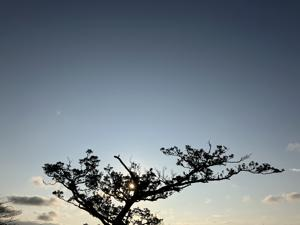
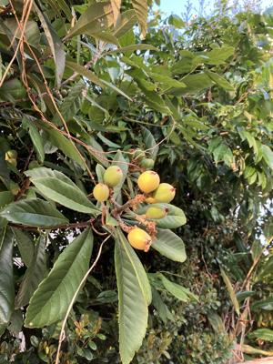

うるがいの話 ある日
最新: １４年【うるがいの話 ある日】とは 一日だけのプログです
『うるがいの話』の最新一日だけのプログで、通信料が少なく経済的だ。カニの画像をクリックすると全ての日付が載る『うるがいの話』サイトを表示します
|
|
【うるがいの話】 うるがい(ｳﾙｶﾞｲ urugai)とは、『もずくがに』の名前でとても大きくなります。 |
|---|---|
|
|
【カミマヤーの話】 猫のことを方言でマヤーといいます。カミマヤー（kamimayaa）とは、神の猫のことです。 |
|
【たながぁの音楽】 たながぁ（ﾀﾅｶﾞｰ tanagaa）とは手長えびのことで、何種類かあり大きいのは車 エビぐらいになります。 |

|
【ぶながぁの話】 ぶながぁ(ﾌﾞﾅｶﾞｰ bunagaa)とは、赤い髪の毛、赤い身体、そして身長は１ｍ２０ｃｍ ぐらい、川の蟹を食べているの目撃された。場所は沖縄県国頭郡大宜味村のと ある村僕の隣近所に住んでいる爺さんから、聞いた話です。 |
|
|
【ギーマの話】 ギーマ(giima)とは、山原の里山に咲くスズランに似た、 花を付けます。実は食べられます、 気が付くと口の周りが紫になっています。 |
2025年03月11日 (火）１４年
16:51

ＮＨＫ土曜ドラマ「水平線のうた」（録画）をみる。石巻市から大
船度へタクシーが移動するシーンがあった。『あれから、能登半島
地震などがおきている、災害の国に生きている』と言うセリフがあ
ったが、まさか大船度火災がおこるとは思わなかっただろう、ドラ
マを見ながら心を痛める。
あの時は、課内会議中だった、テレビで地震の報道があるという、
会議を中断し、報道をみる。夜に課内で送別会があるのだが、予定
通りに行うか、少しもめたが送別会は行われ、少し早めに終わった
と思う。被災地出身の職員が、津波に襲われる気仙沼みなとのテレ
ビ映像を見ながら、ここで遊んでいたのに・・・と呟いた。
私のコドモは、大阪から沖縄へ飛行機で移動中、沖縄への津波の影
響、上空待機されたかな。イサ君（故）の子供は、修学旅行で東京
どうやって帰ろうかと話していた。
ジョギンギコースにあるビワの実

ヨメが『屋敷うがん』をしていない、ん？、推奨は旧暦２月１０日
先週の日曜日までらしい。そういえば、ウォーキングしているとき
「ビンシー」（携帯用の御願セット）を使って、屋敷うがんをして
いるおばさんを見かけたな。今日は、旧暦２月１２日、小雨がふる
なか、９時前から上半期のうがんを行う。予報では、雨だがうがん
を終えたら、晴れた。フムフム